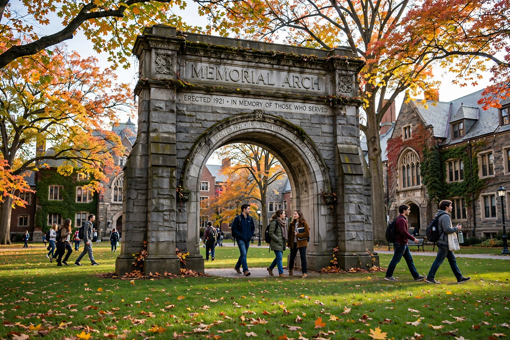

| Oberlin College | |
|---|---|
| Motto | Learning and Labor |
| Established | 1833 |
| Type | Private liberal arts college |
| Location | Oberlin, Ohio, United States |
| Students | About 2,900 |
| Divisions | College of Arts and Sciences; Conservatory of Music |

Oberlin College is a private liberal arts college and conservatory of music in Oberlin, Ohio, United States. Founded in 1833 by Presbyterian ministers John Jay Shipherd and Philo P. Stewart, it is the oldest coeducational liberal arts college in the United States and the second-oldest continuously operating coeducational institution of higher learning in the world. Oberlin was also among the first American colleges to admit African American students, beginning in 1835.
The college grew out of the Oberlin Colony, a utopian Christian community named for the Alsatian pastor Jean-Frédéric Oberlin. Under the influence of revivalist Charles Grandison Finney, who taught theology there, Oberlin became a centre of abolitionism and reform; it was a stop on the Underground Railroad and the site of the 1858 Oberlin–Wellington Rescue. The Oberlin Conservatory of Music, founded in 1865, is the oldest continuously operating conservatory in the United States.
Oberlin comprises the College of Arts and Sciences and the Conservatory of Music, enrolling roughly 2,900 students. It is known for progressive politics, its student-run cooperative association (OSCA), the Allen Memorial Art Museum, and an experimental "Winter Term" each January. Alumni include Nobel laureates, and the college consistently ranks among the top sources of graduates who go on to earn doctorates.